Overview
YOUR RESPONSE GOES HERE
Part 1: Ray Generation and Scene Intersection (20 Points)
Walk through the ray generation and primitive intersection parts of the rendering pipeline.
First, we generate the camera rays we will need to determine intersections. To do this, for a given coordinate in image space we compute its camera space equivalent, generate the ray in camera space, then transform this to world space. Converting image coordinates to camera coordinates is done by scaling the coordinates of the corners to the corresponding coordinates in cameraspace. The ray is drawn with these new coordinates, and then is converted to worldspace by multiplying the ray's direction vector by the rotation matrix.
With this ray implementation, we calculate the radiances of pixels in our view. For each pixel, the integral of radiances over the pixel to calculate this is Monte Carlo estimated by taking and averaging multiple samples, where in each one we generate a random ray to the pixel and then estimate the radiance along that ray.
Intersections with triangles are explained in the next question. Intersections with spheres are calculated using these formulas from lecture. This can give two t values since intersection with a circle can yield two points.
| 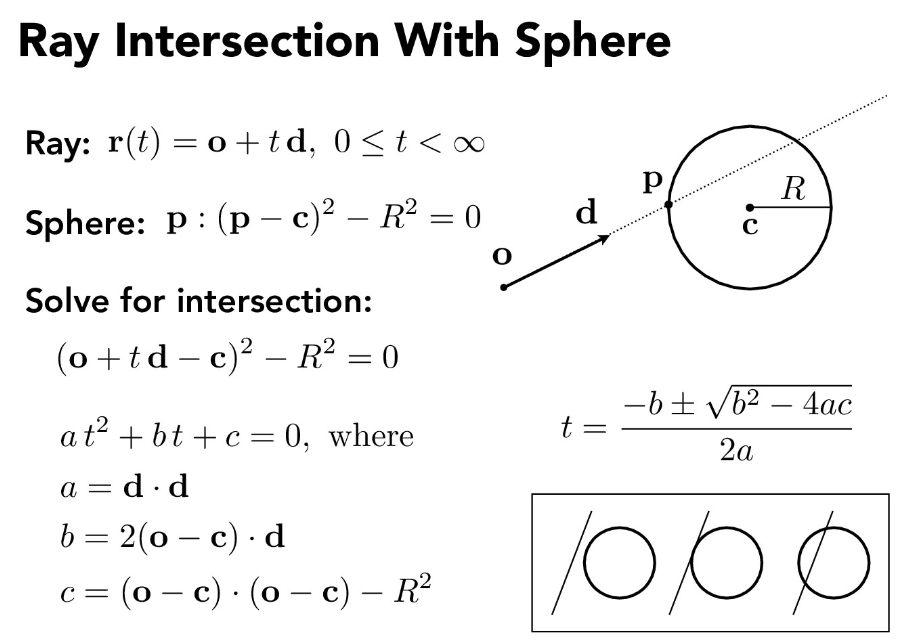 |
Explain the triangle intersection algorithm you implemented in your own words.
For triangle intersection, we use the Moller-Trumbore Algorithm from lecture.
| 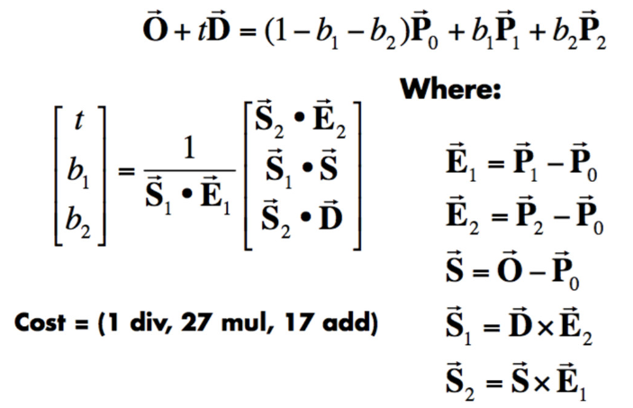 |
The requirements to check for this are that t is between our ray's min_t and max_t (thus a valid intersection), and that the b1 and b2 we receive are between 0 and 1, thus making our calculated b3 between 0 and 1 as well, to ensure we have valid barycentric coordinates that give an intersection point inside the triangle.
Show images with normal shading for a few small .dae files.
|
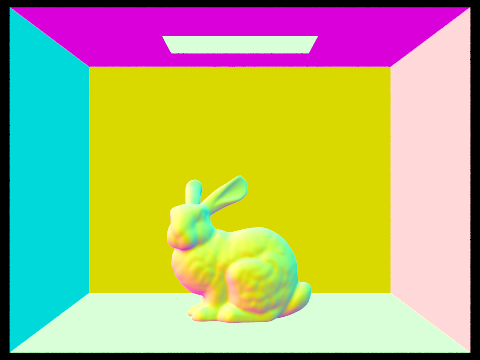
|
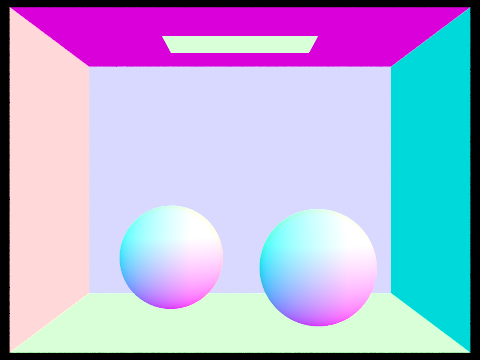
|
|
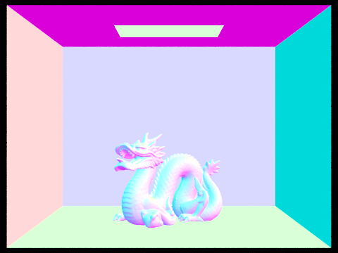
|
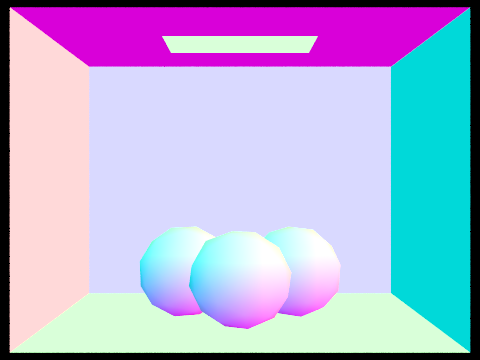
|
Part 2: Bounding Volume Hierarchy (20 Points)
Walk through your BVH construction algorithm. Explain the heuristic you chose for picking the splitting point.
We implemented a bounded volume hierarchy tree constructor that recursively partition our iterator of primitives into two groups, unless the group is small enough to be contained as a leaf node.
Our heuristic for partitioning used the midpoint between the minimum coordinate and maximum coordinate along the current axis of any of the primitives' bounding boxes.
Then for every recursive call, we switch to a different axis uniformly.
This heuristic works quite well and our performance immediately improved by at least tenfold.
Although we considered other strategies such as optimically choosing 2 bounding volumes with the minimum combined volume, the algorithm for computing the exact bounding volume was O(n^3) with respect to the number of primitives, which is too expensive when a scene can contain triangles in the order of 10^6.
In situations where one of the partitions is empty, we arbitrarily choose a primitive to be placed in the empty partition for simplicity of implementation.
In order to take advantage of the bounded volume hierarchy, we also modified the ray intersection implementation to short-circuit whenever possible. At every bounded volume, we check if the ray intersects; in the case that it does not intersect, we immediately return since the ray cannot possibly intersect any primitive inside a bounded volume that the ray doesn't intersect.
This process is exhautively repeated for every bounded volume that the ray does intersect and its children. However, since most scenes contains many triangles closely together, the short-circuit is able to prune out many primitives very quickly, avoiding the need to exhautively check intersections with every primitive for every ray.
Show images with normal shading for a few large .dae files that you can only render with BVH acceleration.
With the specified settings, these only render in reasonable times with BVH acceleration. The last two images are of the same model, but with far more samples per pixel, sampling noise is significantly reduced.
|
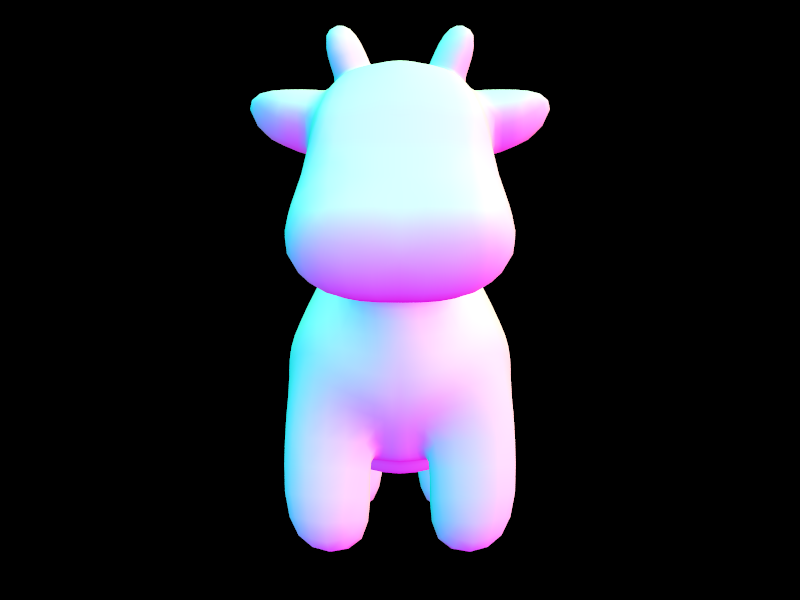
|
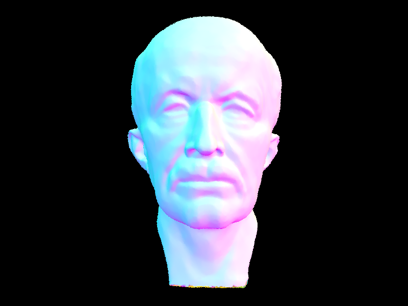
|
|
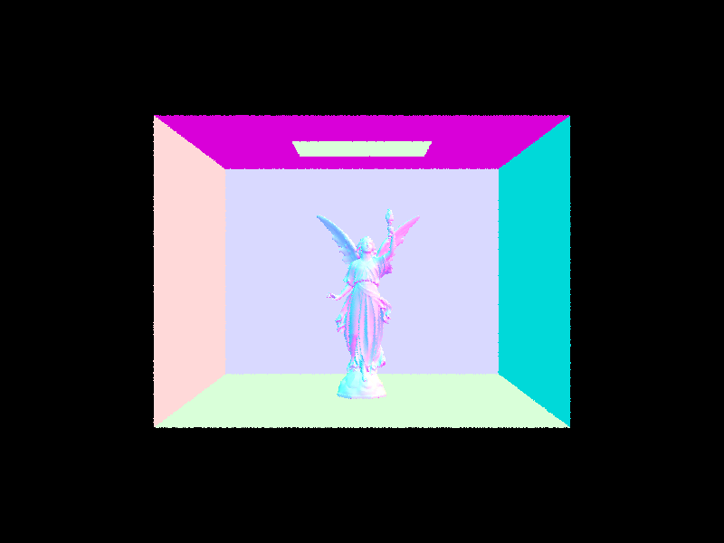
|
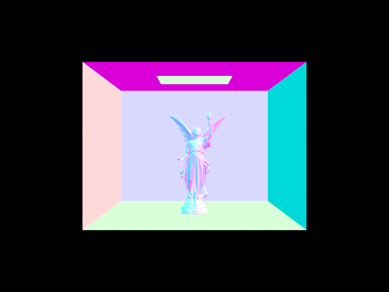
|
Compare rendering times on a few scenes with moderately complex geometries with and without BVH acceleration. Present your results in a one-paragraph analysis.
BVH acceleration significantly improves rendering times on the order of multiple 100s, especially for scenes with many triangles. For example, maxplanck.dae has about 100,000 primitives. Rendering with BVH acceleration takes about a second, but rendering without BVH acceleration takes about a hundred seconds. This aligns with our expectation for how much faster BVH acceleration would be, since a routine that originally took O(n) time with respect to primitives per ray traced is now O(log n) for the average case. As long as the time complexity is log n for the average case, our heuristic does not have to be perfect for our renderer to exploit the speedup.
Part 3: Direct Illumination (20 Points)
Walk through both implementations of the direct lighting function.
The two implementations we use are uniform hemisphere sampling and light sampling.
In uniform hemisphere sampling, we estimate our lighting on a point by uniformly sampling from the surrounding hemisphere. To calculate the outgoing lighting that we perceive, we approximate the reflection equation with a Monte Carlo estimator.

|
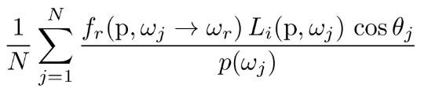
|
So, we randomly pick N samples of rays from the surrounding hemisphere to our point, and after converting to worldspace we see if it intersects with a light source. If it does, then it will contribute to our direct lighting, so we add it to our summation in our above Monte Carlo estimator. Once we normalize this, we have an output that will converge to the correct result.
In light sampling, we take a different approach where instead of uniformly sampling from the surrounding hemisphere, we sample all the lights in our scene directly. This also lets us use point lights.
We still use the Monte Carlo estimator but now use samples directly from the lights. If the ray we cast from the light doesn't intersect with any other object on the way to our point, then it will contribute to our direct lighting.
To implement this, for each of the lights in our scene, we sample it a parameter-defined number of times (or just 1 for point lights since more would be redundant), and for each generated ray we test for an intersection. If there isn't, we add the radiance of the sample to our summation for our Monte Carlo estimator just as in uniform hemisphere sampling.
Show some images rendered with both implementations of the direct lighting function.
| Uniform Hemisphere Sampling | Light Sampling |
|---|---|
|
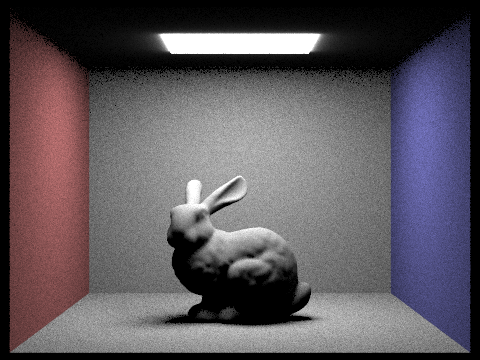
|
|
|
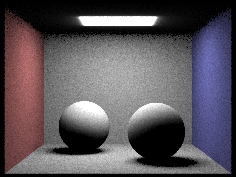
|
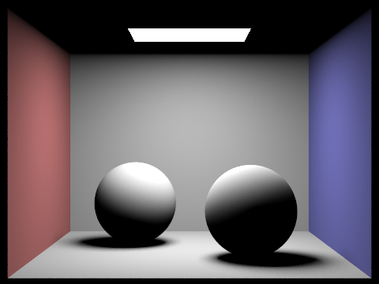
|
Focus on one particular scene with at least one area light and compare the noise levels in soft shadows when rendering with 1, 4, 16, and 64 light rays (the -l flag) and with 1 sample per pixel (the -s flag) using light sampling, not uniform hemisphere sampling.
|
|
|
|
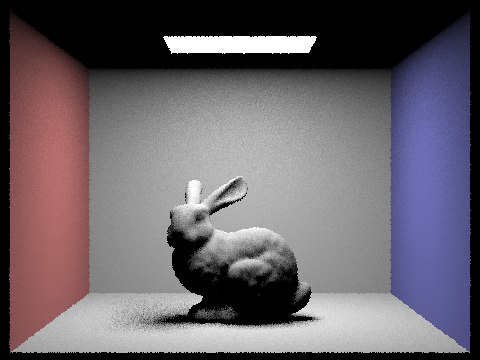
|
|
We can see that as we use more light rays, our noise in shadows decreases drastically (such as in the shadow of the rabbit). This makes sense as we are using more light rays to "draw out" that shadow.
Compare the results between uniform hemisphere sampling and lighting sampling in a one-paragraph analysis.
We can see that overall, lighting sampling has much less noise than uniform hemisphere sampling - we can see that it is much less "grainy". Though uniform hemisphere sampling can also converge to be relatively noiseless, for the same sample rate settings light sampling leads to much better results. This makes sense, as we directly sample from the light sources, while in uniform hemisphere sampling it is likely that many of our rays do not intersect with a light source, leading to slower convergence as many more samples would be needed to converge to being able to reflect the lighting in the scene. In light sampling we only sample from lights, so we at least are only sampling from angles that can potentially lead to a contributing incoming radiance. Thus this leads to a less noisy image overall as we focus in on potentially important rays rather than averaging over many rays that could be drawn from any direction (higher variance).
Part 4: Global Illumination (20 Points)
Walk through your implementation of the indirect lighting function.
Our implementation of the indirect lighting function uses the one-bounce-radiance function as a subrountine.
Since every step of radiance (i.e. every bounce) is equivalent to a single bounce radiance, we can pretend that
the current ray is a single bounce from the camera and reuse the one-bounce-radiance function in our recursive function.
If the max ray depth, which is the number of bounces we allow, is less than 2, we do not recursively bounce the ray since
we only bounce at most once.
Furthermore, we limit the number of bounces the ray is allowed to take before it is terminated from bouncing further so that our computation is finite.
However, this introduces a bias in our algorithm for calculating the bounced rays, since in reality light rays do not have an arbitrary upper bound on the number of times it can bounce.
Thus, we also use a Russian roulette random factor at each bounce that has some small but significant probability p that the ray terminates at the current step.
This removes our bias.
Lastly, we also terminate early if the ray does not intersect the scene.
At each recursive step of a bounced ray, we take the radiance from further bounces (via recursion), and normalize it
by dividing by the probability that the ray does not terminate, and multiplying by the bsdf sample value, Lambert's cosine law,
and divide by pdf of the bsdf sample.
Overall, the combination of a hard upper limit on the number of bounces and the random termination probability
allows us to compute the indirect lighting radiance that terminates not only in expectation but also in guarantee,
and in an unbiased way.
Show some images rendered with global (direct and indirect) illumination. Use 1024 samples per pixel.
|
|
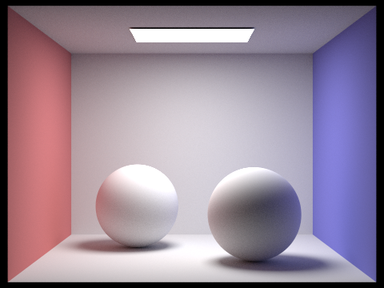
|
We can see that adding indirect illumination significantly makes the renders brighter and more realistic. With high sample rate per pixel, we can also significatly reduce sampling noise.
Pick one scene and compare rendered views first with only direct illumination, then only indirect illumination. Use 1024 samples per pixel. (You will have to edit PathTracer::at_least_one_bounce_radiance(...) in your code to generate these views.)
|
|
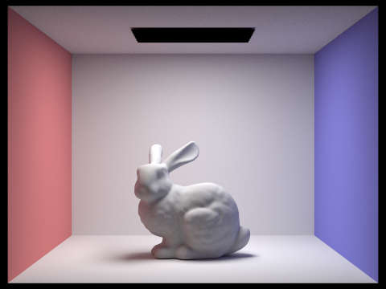
|
We can see that with only direct lighting, the ceiling (which requires at least 2 bounces since in order to bounce on the ceiling from the light source, the ray must bounce elsewhere first) is not lit. The underside of the bunny is also dark, since it is hard for light to bounce only once and light that area. With only indirect lighting, rays directly shining into the camera from the light source without bouncing do not appear.
For CBbunny.dae, compare rendered views with max_ray_depth set to 0, 1, 2, 3, and 100 (the -m flag). Use 1024 samples per pixel.
|
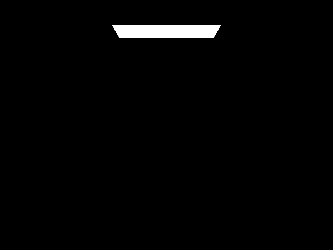
|
|
|
|
|
|
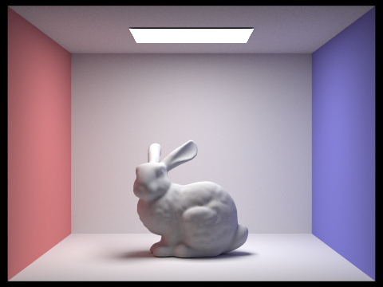
|
With max_ray_depth set to 0, we only see the light directly shining from the light source, since any reflection of a surface implies at least one bounce. With max_ray_depth set to 1, the ceiling is not lit (since bouncing from the ceiling implies at least one other bounce from the light source). We also see that the back wall and floor do not have a red or blue coloring, since the red or blue color from the side walls must bounce onto the back wall or floor, which requires more than one total ray bounce. Between max_ray_depth set to 2 and 3, we see that max_ray_depth set to 3 is slightly brighter, but due to dimishing effects of bouncing, there is only a small difference. Since the diminishing effect diminishes quickly, having max_ray_depth set to 100 is not much brighter; visually, it looks as though the difference between 2 and 3 is greater.
Pick one scene and compare rendered views with various sample-per-pixel rates, including at least 1, 2, 4, 8, 16, 64, and 1024. Use 4 light rays.
|
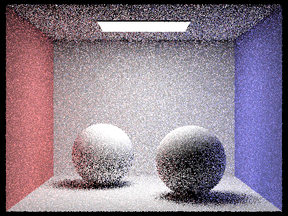
|
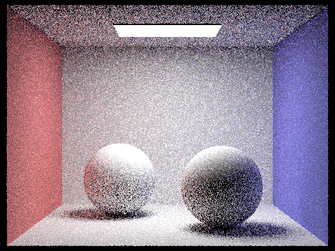
|
|
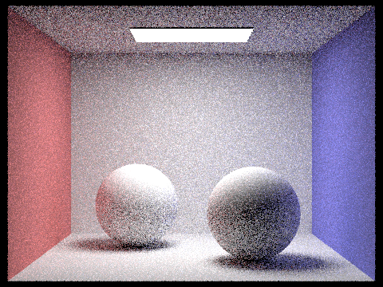
|
|
|
|
|
|
|
Sampling more per pixel decreases the sampling noise. With only 1 sample, the render is quite fuzzy; with 1024 samples, the render looks very smooth. Since each bounce is an estimate of the total light shining at the intersection (considering that bounces may be randomly terminated through Russian roulette), averaging a pixel over more samples smoothes out the random noise that arises from the estimate.
Part 5: Adaptive Sampling (20 Points)
Explain adaptive sampling. Walk through your implementation of the adaptive sampling.
In adaptive sampling, we adjust how many samples we take for a pixel depending on how much is needed to get rid of noise (up to our standard). This is because pixels do not all converge at the same rates - some converge faster while others converge slower. So, adaptive sampling makes it so that not every pixel uses the same high number of samples, as this may be unnecessary computation for some pixels.
In our implementation, for each sample in a pixel we've computed we keep a running total of the sum of the illuminances and the sum of the illuminances squared.
| 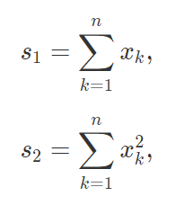 |
For each pixel, after every batch of samples (defined by samplesPerBatch), we calculate the mean and variance of samples so far, and use those to calculate our "convergence" based on confidence intervals.
| 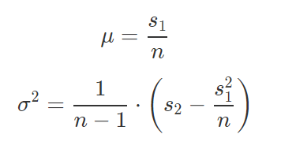 |
| 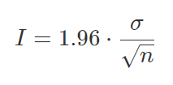 |
If we meet the following condition, then we stop sampling for that pixel and move to the next (to mean that our pixel is noise-free enough).
| 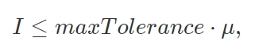 |
Pick two scenes and render them with at least 2048 samples per pixel. Show a good sampling rate image with clearly visible differences in sampling rate over various regions and pixels. Include both your sample rate image, which shows your how your adaptive sampling changes depending on which part of the image you are rendering, and your noise-free rendered result. Use 1 sample per light and at least 5 for max ray depth.
|
|
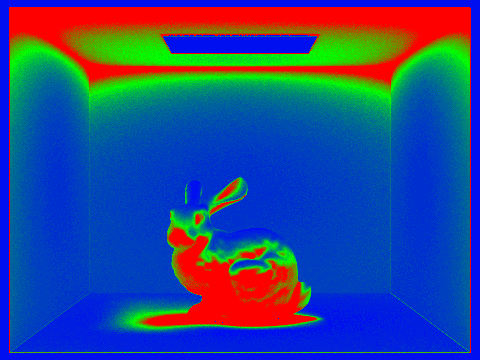
|
|
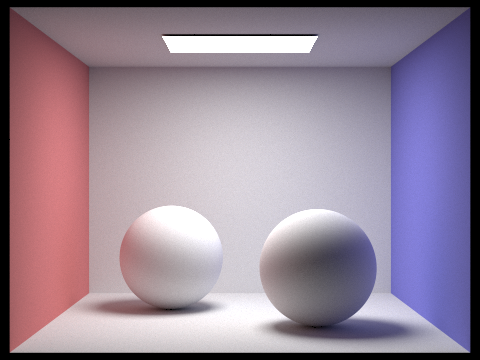
|
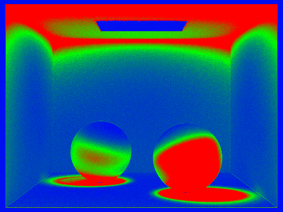
|